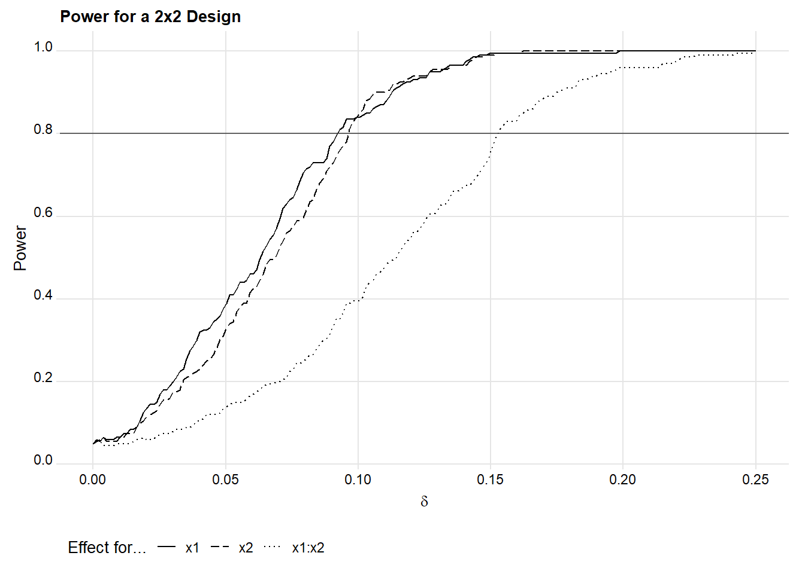

Chapter 6 Power analysis
In this chapter, we provide examples of how we assess statistical power for different experimental research designs. We often prefer to use simulation to assess the power of different research designs because we rarely have designs that fit easily into the assumptions made by analytic tools.
By “analytic tools,” we refer to methods of calculating power (or a minimum required sample size, etc.) based on mathematical derivations under particular assumptions. For instance, in an i.i.d. two-arm design with random assignment of half the sample, no covariates, a roughly normally distributed outcome, and equal variance in each treatment group, it’s possible show that we would have 80% power to estimate a difference in means of if we collect data on approximately observations, where is the overall standard deviation of the outcome.34 But we frequently consider situations where such derivations are not readily available.
6.1 An example of the off-the-shelf approach
To demonstrate how analytical power analysis works in principle, consider the R function power.t.test(). This can be used for power calculations in designs where a two-sample t-test is an appropriate estimation strategy (with no adjustment for blocking, clustering, or covariates).
When using this function, there are three parameters that we’re most concerned with, two of which must be specified by the user. The third is then calculated and returned by the function. These are:
n= sample size, or number of observations per treatment groupdelta= the target effect size, or a minimum detectable effect (MDE)power= the probability of detecting an effect if in fact there is a true effect of sizedelta
Note that there is also the parameter sd, representing the standard deviation of the outcome. This is set to 1 by default unless power.t.test() is instructed otherwise.
Say, for example, you want to know the MDE for a two-arm study with 1,000
participants, of which half are assigned to treatment. Using power.t.test() you would specify:
power.t.test(
n = 500, # The number of observations per treatment arm
power = 0.8 # The traditional power threshold of 80%
)
Two-sample t test power calculation
n = 500
delta = 0.1774
sd = 1
sig.level = 0.05
power = 0.8
alternative = two.sided
NOTE: n is number in *each* groupIf all we wanted to extract was the MDE, we could instead write:
[1] 0.1774If we request the sample size instead, we can illustrate that this is applying an expression like the one we mention above:
And now via R code:
[1] 1000If you need to, you can adjust other parameters, like the standard deviation of the outcome, the level of the test, or whether the test is one-sided rather than two-sided. There are also other functions available for different types of outcomes. For example, if you have a binary response, you can use power.prop.test() to calculate power for a similar kind of simple difference in proportions test.
An equivalent approach in Stata would be as follows:
power twomeans 0, power(0.8) n(1000) sd(1)
di r(delta) // See: return listStata users can learn more about available off-the-shelf tools by checking out Stata’s
plethora of relevant help files. Meanwhile, R users could start by consulting the pwrss’s packages guide.
6.2 An example of the simulation approach
We can compare the output of power.t.test() to the output from a
simulation-based (i.e., computational) approach, which we illustrate in the code chunk below. Notice that our example below relies on manually-written functions that could be copied and adapted by OES team members to the needs of different projects. This code is more detailed than we need for simple power analysis problems, but it provides useful flexibility for simulating more complicated designs (particularly designs we cannot specify as easily within the DeclareDesign framework).
## OES Power Simulation Toolkit (R):
##
## replicate_design(...) ---: Generate replicates of a simulated dataset
## estimate(...) -----------: Estimate the null test-stat for treatment(s).
## evaluate_power(...) -----: Evaluate power to detect non-zero effects.
## evaluate_mde(...) -------: Find MDE, searching over range of effect sizes.
## evaluate_bias(...) ------: Compute bias and other diagnostics.
## Required packages
require(magrittr)
require(fabricatr)
require(foreach)
##### REPLICATE a hypothetical design R times #####
# Inputs:
# - (1) number of replicates desired
# - (2) additional arguments that are passed to fabricate() (see the ...).
# - Generally, each argument is a separate variable to generate.
# - Later vars can be a function of earlier ones.
# - See our examples below, this is often simpler than it sounds!
# - A built-in simulated treatment effect is not generally needed.
replicate_design <-
function(R = 200, ...) {
# Function: produce one draw of the simulated dataset/design
design <- function() {
fabricatr::fabricate(
...
) %>%
list
}
# Use replicate() to replicate that design R times
rep <- replicate(
n = R,
expr = design()
)
# Output will be a list of dataframes.
# For each, add a variable indicating which sim# it is
for(i in 1:length(rep)) {
rep[[i]] <- rep[[i]] %>%
dplyr::mutate(
sim = i
)
}
return(rep)
}
##### ESTIMATE results using those replicated dfs #####
# Inputs:
# - (1) Estimation formula (y ~ x1 + x2 + ...)
# - (2) Variables(s) we want to be powered to estimate the effects of
# - Generally just the treatment var(s)
# - (3) Data the estimator should be applied to (list of dfs)
# - (4) The estimator (the default is OLS with HC2 errors)
estimate <- function(
formula,
vars,
data = NULL,
estimator = estimatr::lm_robust
) {
# Pass the list of dfs to map().
# map() applies the procedure specified below to each df in the list.
data %>%
purrr::map(
# For each dataframe in the list, apply the specified estimator,
# using the specified formula.
~ estimator(
formula,
data = .
) %>%
# tidy up the results and specify the rows of estimates to keep
estimatr::tidy() %>%
dplyr::filter(
.data$term %in% vars
)
) %>%
# Append the results from each sim replicate into a single dataframe
dplyr::bind_rows() %>%
# Add some more useful labels
dplyr::mutate(
sim = rep(1:length(data), each = n() / length(data)),
term = factor(.data$term, levels = vars)
)
}
##### EVALUATE power of the design #####
# Inputs:
# - (1) Results produced by estimate() above
# - (2) Hypothetical effects we want power estimates for
# - (3) Desired alpha (significance) level
evaluate_power <- function(data, delta, level = 0.05) {
# Make sure delta (may be scalar or vector) was specified
if (missing(delta)) {
stop("Specify 'delta' to proceed.")
}
# Apply the following (i.e., after %do%) to each delta separately,
# appending the results with bind_rows at the end.
foreach::foreach(
i = 1:length(delta),
.combine = "bind_rows"
) %do% {
# Start with the df of estimates
data %>%
# Create variables storing the relevant delta and new test stat
dplyr::mutate(
delta = delta[i],
new_statistic = (.data$estimate + .data$delta) / .data$std.error
) %>%
# Similar to group_by, result here is list of dfs for each term
dplyr::group_split(.data$term) %>%
# Separately for the df for each term, get p for each replicate
purrr::map(
~ {
tibble::tibble(
term = .$term,
delta = .$delta,
p.value = foreach(
j = 1:length(.$new_statistic),
.combine = "c"
) %do% mean(abs(.$statistic) >= abs(.$new_statistic[j]))
)
}
)
} %>%
# Organize by term and delta
group_by(.data$term, .data$delta) %>%
# Average over repliacates to get power for each term/delta combination
summarize(
power = mean(.data$p.value <= level),
.groups = "drop"
)
}
##### EVALUATE the min. detectable effect #####
# Helps summarize the results of evaluate_power() above,
# basically a wrapper for evaluate_power()
# Inputs:
# - (1) Results produced by estimate() above
# - (2) Range of hypothetical effects we want to consider (delta above)
# - (3) How fine-grained do we want changes in delta to be?
# - (4) Alpha (significance) level
# - (5) Minimum power we want to accept
evaluate_mde <- function(
data,
delta_range = c(0, 1),
how_granular = 0.01,
level = 0.05,
min_power = 0.8
) {
# Use the function designed above to get power estimates
eval <- evaluate_power(
data = data,
delta = seq(delta_range[1], delta_range[2], how_granular),
level = level
) %>%
# Organize data by term
dplyr::group_by(
.data$term
) %>%
# Get the MDE at our desired power level for each term
dplyr::summarize(
MDE = min(.data$delta[.data$power >= min_power]),
.groups = "drop"
)
return(eval)
}
##### EVALUATE Bias #####
# Helps summarize the results of estimate() above.
# Pass results of estimate() to this function.
# Inputs:
# - (1) Data produced by estimate() above
# - (2) True parameter value (generally true ATE)
evaluate_bias <- function(
data,
ATE = 0
) {
# Start with the estimates for each replicated dataset
smry <- data %>%
# Add a variable representing the true ATE
dplyr::mutate(
ATE = rep(ATE, len = n())
) %>%
# Organize estimates by term
dplyr::group_by(
.data$term
) %>%
# Summarize across replicates, within each term
dplyr::summarize(
"True ATE" = unique(.data$ATE),
"Mean Estimate" = mean(.data$estimate),
Bias = mean(.data$estimate - .data$ATE),
MSE = mean((.data$estimate - .data$ATE)^2),
Coverage = mean(
.data$conf.low <= .data$ATE & .data$conf.high >= .data$ATE
),
"SD of Estimates" = sd(.data$estimate),
"Mean SE" = mean(.data$std.error),
.groups = "drop"
)
return(smry)
}** OES Power Simulation Toolkit (Stata):
**
** draw_from_design ---: Generate a simulated dataset (NOT RUN DIRECTLY)
** single_estimator ---: Draw data once and estimate results (NOT RUN DIRECTLY)
** replicate ----------: Repeat (generate -> estimate) many times
** evaluate_power -----: Evaluate power to detect non-zero effects.
** evaluate_mde -------: Find MDE, searching over range of effect sizes.
** evaluate_bias ------: Compute bias and other diagnostics.
***** DRAW FROM a hypothetical design *****
** Note: Must be modified by user
* Required set-up:
* - (1) Write code within this program to generate one draw of a simulated dataset.
* - See our examples below, this is often simpler than it sounds!
* - A built-in simulated treatment effect is not generally needed.
capture program drop draw_from_design
program define draw_from_design, nclass
* Clear existing data
clear
** Replace the rest of the code inside this program with your own code
* Sample size of 1000 observations
set obs 1000
* Generate simulated outcome
gen y = rnormal(0, 1)
* Generate simulated treatment (complete random assignment)
qui count
local ntreat = r(N)/2
complete_ra x, m(`ntreat')
end
**** ESTIMATE results for a single simulated dataset ****
** Note: Must be modified by user
* Required set-up:
* - (1) Define the data generationprogram above.
* - (2) Write out the test you want to run in this program (using the simulated data).
capture program drop single_estimator
program define single_estimator, rclass
* Check that design program exists
quietly capture draw_from_design
if _rc != 0 {
di as error "Error: define data generation program (draw_from_design) first"
exit
}
* Call the design program
draw_from_design
* Write out the desired estimation strategy
reg y x, vce(hc2)
end
**** REPEAT (generation -> estimation) many times ****
** Note: Modification by user NOT NEEDED (just copy into your .do file)
* Required set-up:
* - (1) Define both programs above (data generation and a single_estimator)
* Inputs on use:
* - (1) Number of replicates (default = 200)
capture program drop replicate
program define replicate, rclass
syntax[, reps(integer 200) ]
* Check that design program exists
quietly capture draw_from_design
if _rc != 0 {
di as error "Error: define data generation program (draw_from_design) first"
exit
}
* Check that single_estimator program exists
quietly capture single_estimator
if _rc != 0 {
di as error "Error: define estimation program (single_estimator) first"
exit
}
* Save coefficients and SEs from each draw to memory.
simulate ///
_b _se, ///
reps(`reps') nodots: ///
single_estimator
* Simulation indicator
gen sim = _n
* Modify var names of coefficients/SEs slightly
foreach var of varlist _b* _se* {
qui rename `var' `=substr("`var'", 2, .)'
}
* Reshape to a format that makes the desired power calculation easier.
qui reshape long b_ se_, i(sim) j(term) string
end
**** EVALUATE power of the design ****
** Note: Modification by user NOT NEEDED (just copy into your .do file)
* Required setup:
* - (1) Define all programs above
* - (2) Run replicate to get simulated coef/SE estimates in memory.
* Inputs on use:
* - (1) Hypothetical effects we want power estimates for (min, steps, and max)
* - (Default: from 0 to 1 in steps of 0.01)
* - (2) Desired alpha (significance) level (default = 0.05)
capture program drop evaluate_power
program define evaluate_power, nclass
syntax[, ///
delta_min(real 0) ///
delta_steps(real 0.01) ///
delta_max(real 1) ///
alpha(real 0.05) ]
* Data to return to after each iteration
tempfile restore_dat
qui save `restore_dat', replace
* Loop over specified effect sizes
local i = 0
forvalues n = `delta_min'(`delta_steps')`delta_max' {
qui use `restore_dat', clear
local ++i
* Real and simulated statistics for each a given effect size
gen delta = `n'
gen real_t = b_/se_
gen sim_t = (b_ + delta)/se_
* Generate a p-value for each value of sim_t
qui gen sim_p = .
qui count
forvalues v = 1/`r(N)' { // Loop over observations
qui gen greaterequal = abs(real_t) >= abs(sim_t[`v'])
qui sum greaterequal if term == term[`v'], meanonly
qui replace sim_p = r(mean) if _n == `v'
qui drop greaterequal
}
* Use these to get power for the given delta
qui gen reject = sim_p <= `alpha'
bysort term: egen power = mean(reject)
collapse (mean) power, by(term delta)
label var power ""
* Save, and advance to the next delta
if `i' == 1 {
qui tempfile running_dat
qui save `running_dat', replace
}
else {
append using `running_dat'
qui save `running_dat', replace
}
}
* Open the result, replacing the data in memory
qui use `running_dat', clear
end
**** EVALUATE the min. detectable effect ****
** Note: Modification by user NOT NEEDED (just copy into your .do file)
* Required setup:
* - (1) Define programs above
* - (2) Run replicate and evaluate_power
* Inputs on use:
* - (1) Minimum power desired
capture program drop evaluate_mde
program define evaluate_mde, nclass
syntax[, min_power(real 0.8)]
quietly {
bysort term (power): gen above_min = power >= `min_power'
drop if above_min == 0
bysort term (delta): gen min = _n == 1
drop if min == 0
drop min above_min
}
end
**** EVALUATE Bias for a particular term ****
** Note: Modification by user NOT NEEDED (just copy into your .do file)
* Required setup:
* - (1) Define programs above
* - (2) Run replicate
* Inputs on use:
* - (1) The name of the term to provide diagnosics for
* - (2) True parameter value (generally true ATE)
capture program drop evaluate_bias
program define evaluate_bias, nclass
syntax, true_value(real) term(string) [restore_data]
* Save data to return to in temporary file
* (program includes option to turn this off)
if "`restore_data'" != "" {
tempfile restore
qui save `restore_data', replace
}
* Subset to only the term in question
qui keep if term == "`term'"
* True parameter as variable
qui gen true_value = `true_value'
* Prepare variables to summarizetrue
qui gen bias = b_ - true_value
qui gen MSE = (b_ - true_value)^2
qui gen conflow = b_ - (1.96 * se_) // normal approximation
qui gen confhigh = b_ + (1.96 * se_) // normal approximation
qui gen coverage = true_value >= conflow & true_value <= confhigh
collapse ///
(first) True = true_value ///
(mean) Mean_Estimate = b_ Bias = bias MSE Coverage = coverage Mean_SE = se_ ///
(sd) SD_Estimate = b_, ///
by(term)
list
* Return to data?
if "`restore_data'" != "" {
qui use `restore_data', clear
}
endResults are shown in the subsequent figure. Though the computational estimates are slightly different, they comport quite well with the analytic estimates.
## Parameters used for both sets of calculations
n <- 1000 # Sample size
d <- 0.2 # Effect size to consider
## Analytical power estimates
power_data <-
tibble(
d = seq(0, 0.5, len = 200),
power = power.t.test(n = n / 2, delta = d)$power
)
## Save initial plot; add simulation results below
g <- ggplot(power_data) +
geom_line(aes(d, power, linetype = "power.t.test()")) +
labs(
x = expression(delta),
y = "Power",
title = "Power for Simple Difference in Means Test"
) +
scale_y_continuous(
n.breaks = 6
) +
geom_hline(
yintercept = 0.8,
col = "grey25",
alpha = 08
) +
ggridges::theme_ridges(
center_axis_labels = TRUE,
font_size = 10
)
## Comutational power estimates, using the functions above
sim_power_data <-
replicate_design(
N = n,
y = rnorm(N),
x = randomizr::complete_ra(
N, m = N / 2
)
) %>%
estimate(
form = y ~ x, vars = "x"
) %>%
evaluate_power(
delta = seq(0, 0.5, len = 200)
)
## Add results from the simulation to the plot and compare
g +
geom_line(
data = sim_power_data,
aes(delta, power, linetype = "simulation"),
color = "grey25"
) +
labs(
linetype = "Method:"
) +
theme(
legend.position = "bottom"
) ** Analytical power estimates
* View power estimates for a range of effect sizes as a table
power twomeans 0, n(1000) diff(0.005(0.005)0.505)
* Or view as a graph instead
power twomeans 0, n(1000) diff(0.005(0.005)0.505) graph
* It's also possible to get the estimates as data in memory
* and write your own plotting code (e.g.: using twoway).
clear
svmat r(pss_table), names(col)
list in 1/5 // Illustration: power estimates are data in memory
keep diff power
rename diff delta
tempfile analytical
save `analytical', replace
** Computational power estimates, using the programs as defined above
replicate, reps(200) // Replicate data generation and estimation 200 times
evaluate_power, delta_min(0.005) delta_max(0.500) delta_steps(0.005) // Consider a range of effect sizes
** Merge computational with analytic estimates
rename power power_comp
keep if term == "x"
merge 1:1 delta using `analytical'
keep if _merge == 3
drop _merge
** Manual line plot
label var power "Analytical"
label var power_comp "Computational"
twoway ///
(line power delta) ///
(line power_comp delta), ///
legend(pos(6) rows(1)) ///
xtitle("Effect size") ytitle("Power") ///
yline(0.8) title("Power for Simple Difference in Means Test")As mentioned above, we produced those computational estimates using some pre-written functions that are housed in OES’s GitHub code library. These functions are also laid out and explained step-by-step in comments in a code chunk above.
These tools are designed around a simple workflow, and they should help remove some of the programming that may otherwise be a barrier to project teams calculating power computationally. The workflow proceeds as follows (we’ll focus on explaining the R code here in text):
- Replicate
- Estimate
- Evaluate
The first step, Replicate, entails specifying an example data-generation process (which may include only an outcome variable and treatment assignment) and simulating it multiple times to create a series of randomly generated datasets. Each individual dataset produced is a sample replicate.
The next step, Estimate, entails estimating effects for select treatments within each sample replicate. We can use those estimates to produce a distribution of test statistics for each effect size of interest.
Finally, the last step, Evaluate, entails using those test statistics to evaluate our power to detect a range of different effect sizes.
This workflow is supported by three functions: replicate_design(),
estimate(), and evaluate_power(). Here’s the simulation code used to generate Figure 1 in R in more detail (alongside a similar illustration of the Stata version of our power simulation toolkit):
## 1. Replicate:
# Output is a list of dfs
rep <- replicate_design(
R = 200, # Number of sample replicates
N = 1000, # Sample size of each replicate
y = rnorm(N), # Normally distributed response
x = rbinom(N, 1, 0.5) # Binary treatment indicator
)
## 2. Estimate:
# Output is a dataframe of estimates from each sample replicate
est <- estimate(
y ~ x, # Regression formula
vars = "x", # Treatment variable(s)
data = rep # Sample replicates
)
## 3. Evaluate:
# Output is a list of dfs
pwr_eval_sim <- evaluate_power(
data = est, # Estimates, from estimate() above
delta = seq(0, 0.5, len = 200) # Effect sizes to consider
) ** 0. Setup
* 0a: Simulate (update program below as needed)
* Output is a dataset in memory
capture program drop draw_from_design
program define draw_from_design, nclass
* Clear existing data
clear
* Sample size of 1000 observations
set obs 1000
* Generate simulated outcome
gen y = rnormal(0, 1)
* Generate simulated treatment (complete random assignment)
qui count
local ntreat = r(N)/2
complete_ra x, m(`ntreat')
end
* 0b: Analysis strategy (update program below as needed)
* Output is a dataset in memory and stored estimates
capture program drop single_estimator
program define single_estimator, rclass
* Call the design program
draw_from_design
* Write out the desired estimation strategy
reg y x, vce(hc2)
end
** 1/2. Replicate/Estimate:
* Output is a dataset of coefficients and SEs from each simulation.
replicate, reps(200) // Number of replications
** 3. Evaluate
* Output is a set of power estimates in memory, one for each delta
evaluate_power, ///
delta_min(0.005) /// Smallest delta to consider
delta_max(0.500) /// Largest delta to consider
delta_steps(0.005) // Increments to applyThe final product—pwr_eval_sim above in the R code—reports the power for each of the user-specified effect sizes (delta) and (vars) model terms specified when calling estimate(). The output can be used to plot power curves or to compute minimum detectable effects.
These functions help make the process of performing computational power analysis for OES projects easier, while still providing ample room for flexibility in both design and estimation strategy. For example, replicate_design() in the R code is a wrapper for fabricate() in the fabricatr package. This gives users the ability to generate multi-level or nested data-generating processes, specify additional covariates, or determine whether treatment randomization is done within blocks or by clusters.
By default, estimates in R are returned using lm_robust() from the estimatr package, but alternative estimators can be specified. Say, for example, you have a binary response and a set of covariates, and your design calls for using logistic regression. You could generate estimates for such a design as follows:
## Define logit estimator function
logit <- function(...){ glm(..., family = binomial)}
## Pass this to the estimate() function above
est <- estimate(
y ~ x + z1 + z2, data = rep, estimator = logit
) Other tools for power simulation exist as well. For instance, throughout this SOP, we have used DeclareDesign to simulate hypothetical research designs and compare their performance. And there is no shortage of further simulation examples that can be found online for more specialized use-cases.
6.3 When to use which approach
For a simple difference in means test, the programming required for an analytical power analysis is much much less involved. When is computational power analysis worth the extra time investment?
To start, in cases where we’re interested in the power to detect a simple difference in means, or a difference in proportions for binary responses, it is probably sufficient to use power.t.test() (for means) or power.prop.test() (for proportions).
However, OES projects often involve design features or analytic strategies that are difficult to account for using off-the-shelf tools. For example, we often include covariates in our statistical models to enhance the precision of our treatment effect estimates. If the gain in precision is small, then it might not be important to account for this in power calculations in the design phase of the project. But if we expect a substantial gain in precision due to including covariates, then we probably want to account for estimating power. The natural way to do this is by simulation, including the covariates in the “replicate” and “estimate” steps above. Accounting for covariates is especially useful if we can use real historical or pre-treatment data that represent the correlations we expect to see between covariates and outcomes in our later analysis of the trial data.
More complex design features or analytic strategies may make investing in the simulation approach even more worthwhile, or downright necessary. Examples include heterogeneity in treatment effects, a multi-arm or factorial design, or block randomization with differing probabilities of treatment between blocks – none of which is usually easily accounted for with off-the-shelf tools. In the next section, we provide some additional examples of simulations for more complex designs or analytic strategies.
6.4 Additional examples of the simulation approach
Here we provide two examples of research designs where simulation is well worth the extra effort. Attendant R code is included to illustrate how we could use the functions above in these cases.
6.4.1 A two-by-two design with interaction
One instance where computational power analysis may be worth the investment is in assessing power for a two-by-two factorial design with an interaction. In such a design, the goal is to assess not only the power to detect main effects (the average effect of each individual treatment), but also power to detect a non-zero interaction effect between the treatments.
Say we have a design with 1,000 observations and we would like to know the effect of two treatments on a binary outcome with a baseline of 0.25. Each treatment is assigned to individuals at random, resulting in four roughly equal sized groups of observations after randomization: (1) a control group, (2) those assigned to treatment 1 but not treatment 2, (3) those assigned to treatment 2 but not treatment 1, and (4) those assigned to both treatment 1 and 2.
We can easily calculate power to detect the main effect of each treatment as follows:
two_by_two <-
## Basic elements of each simulated sample replicate
replicate_design(
N = 1000,
y = rbinom(N, 1, 0.25),
x1 = complete_ra(N, m = N / 2),
x2 = complete_ra(N, m = N / 2)
) %>%
## Estimate main and interaction effects
estimate(
form = y ~ x1 + x2 + x1:x2,
vars = c("x1", "x2", "x1:x2")
) %>%
## Evaluate power
evaluate_power(
delta = seq(0, 0.25, len = 200)
)** Basic elements of each simulated sample replicate
* Redefine data generation
capture program drop draw_from_design
program define draw_from_design, nclass
* Clear existing data
clear
* Sample size of 1000 observations
set obs 1000
* Generate simulated outcome
gen y = rbinomial(1, 0.25)
* Generate simulated treatments
qui count
local ntreat = r(N)/2
complete_ra x, m(`ntreat')
complete_ra x2, m(`ntreat')
end
** Estimate main and interaction effects
* Redefine estimation
capture program drop single_estimator
program define single_estimator, rclass
* Call the design program
draw_from_design
* Write out the desired estimation strategy
* (note: the program currently does not correctly handle factor notation)
gen x_int = x*x2
reg y x x2 x_int, vce(hc2)
end
** Replicate estimates
replicate, reps(200)
** Evaluate power
evaluate_power, delta_min(0) delta_max(0.25) delta_steps(0.002)Using the output reported in the object two_by_two, we can plot the power curves for each of the main effects and the interaction effect, as shown
in Figure 2.
ggplot(two_by_two) +
## Add a line representing power for each effect/term
geom_line(
aes(delta, power, linetype = term)
) +
## Choose linetypes that are easy to distinguish
scale_linetype_manual(values = c("solid", "longdash", "dotted")) +
## Horizontal line for 80% power
geom_hline(
yintercept = 0.8,
color = "grey25",
alpha = 0.8
) +
## y-axis scale
scale_y_continuous(
n.breaks = 6
) +
## Adding labels
labs(
x = expression(delta),
y = "Power",
title = "Power for a 2x2 Design",
linetype = "Effect for..."
) +
## Update some visual settings with the ridges theme
ggridges::theme_ridges(
font_size = 10,
center_axis_labels = TRUE
) +
## Other settings (here: just legend location)
theme(
legend.position = "bottom"
)** Reshape to apply plotting code similar to above
reshape wide power, i(delta) j(term) string
** Line plot
label var powerx "x1"
label var powerx2 "x2"
label var powerx_int "x1 * x2"
twoway ///
(line powerx delta, lcolor(black) lpattern(solid)) /// x line
(line powerx2 delta, lcolor(black) lpattern(dash)) /// x2 line
(line powerx_int delta, lcolor(black) lpattern(dot)), /// interaction line
legend(pos(6) rows(1)) ///
xtitle("Effect size") ytitle("Power") ///
yline(0.8) title("Power for a 2x2 Design")
Of course, in this simple example, we could still have relied on some reasonable analytical assumptions to arrive at these estimates (see a helpful discussion here). But running a simulation saves us the trouble.
6.4.2 Covariate adjustment with the Lin estimator
Another scenario where computational power analysis is worth the investment is if a design calls for covariate adjustment. This is common in OES projects, and, in many instances, the Lin (2013) saturated regression estimator is the solution we choose.
Devising an off-the-shelf method to calculate power for such a study is possible, but would likely require investing time doing background research to ensure its accuracy. Alternatively, we could simply replicate, estimate, and evaluate such a design computationally. The results will be roughly just as accurate, without regarding a review of the methods literature.
Suppose we have a sample of 1,000 observations and a continuous outcome variable. We wish to assess the effect of some policy intervention on this continuous outcome. Our design calls for randomly assigning only individuals to receive the intervention — perhaps because it is expensive to implement — and the rest to control.
In addition to having data on the outcome and on treatment assignment, let’s say that we also anticipate obtaining a dataset of covariates for our 1,000 observations. This data contains two variables that are prognostic of the outcome and the treatment effect. We’ll call these z1 and z2. The first is a continuous measure and the latter is a binary indicator. Our design calls for adjusting for these covariates to improve the precision of our estimated treatment effect. We can simulate such a design to illustrate the possible benefits of covariate adjustment in terms of improved statistical power.
We begin by replicating the data-generating process:
rep_data <-
replicate_design(
N = 1000,
z1 = rnorm(N, sd = 3), # Continuous covariate
z2 = rbinom(N, 1, 0.25), # Binary covariate
cz1 = z1 - mean(z1), # Mean center z1
cz2 = z2 - mean(z2), # Mean center z2
x = complete_ra(N, m = N * 0.1), # Randomly assign 10% to treatment
y = (z1 + z2) * x + (0.8 * z1) - (1 * z2) + rnorm(N) # Simulate Y
)** Basic elements of each simulated sample replicate
* Redefine data generation
capture program drop draw_from_design
program define draw_from_design, nclass
* Clear existing data
clear
* Sample size of 1000 observations
set obs 1000
* Continuous covariate
gen z1 = rnormal(0, 3)
* Binary covariate
gen z2 = rbinomial(1, 0.25)
* Mean centered versions
qui sum z1
gen cz1 = z1 - r(mean)
qui sum z2
gen cz2 = z2 - r(mean)
* Generate simulated treatment (10%)
complete_ra x, prob(0.1)
* Simulate y
gen y = ((z1 + z2) * x) + (0.8 * z1) - (1 * z2) + rnormal()
endWe then estimate and evaluate. For comparison, power is computed (1) with covariate adjustment via the Lin estimator, (2) without covariate adjustment, and (3) with standard linear, additive covariate adjustment:
## With the Lin Estimator
lin_adjust <-
rep_data %>%
estimate(
form = y ~ x + z1 + z2 + x:cz1 + x:cz2,
vars = "x"
) %>%
evaluate_power(
delta = seq(0, 0.5, len = 200)
)
## With no covariate adjustment
no_adjust <-
rep_data %>%
estimate(
form = y ~ x,
vars = "x"
) %>%
evaluate_power(
delta = seq(0, 0.5, len = 200)
)
## With linear, additive covariate adjustment
standard_adjust <-
rep_data %>%
estimate(
form = y ~ x + z1 + z2,
vars = "x"
) %>%
evaluate_power(
delta = seq(0, 0.5, len = 200)
)** With the lin estimator
capture program drop single_estimator
program define single_estimator, rclass
* Call the design program
draw_from_design
* Write out the desired estimation strategy
* (As noted above, this code isn't currently written for factor notation)
gen x_cz2 = x * cz2
gen x_cz1 = x * cz1
reg y x x_cz2 x_cz1 cz1 cz2, vce(hc2)
end
* Replicate and save
replicate, reps(200)
evaluate_power, delta_min(0) delta_max(0.5) delta_steps(0.005)
keep if term == "x"
rename power power_lin
tempfile lin
save `lin', replace
** With no covariate adjustment
capture program drop single_estimator
program define single_estimator, rclass
* Call the design program
draw_from_design
* Write out the desired estimation strategy
reg y x, vce(hc2)
end
* Replicate and save
replicate, reps(200)
evaluate_power, delta_min(0) delta_max(0.5) delta_steps(0.005)
keep if term == "x"
rename power power_no
tempfile no
save `no', replace
** With linear, additive covariate adjustment
capture program drop single_estimator
program define single_estimator, rclass
* Call the design program
draw_from_design
* Write out the desired estimation strategy
reg y x cz1 cz2, vce(hc2)
end
* Replicate and merge
replicate, reps(200)
evaluate_power, delta_min(0) delta_max(0.5) delta_steps(0.005)
keep if term == "x"
merge 1:1 delta using `lin'
drop _merge
merge 1:1 delta using `no'We can now compare results under these alternative empirical strategies. Figure 3 shows the power curves for each approach. The Lin estimator provides substantial improvements in power over both no covariate adjustment and linear additive adjustment.35 And it only took a few lines of code to get this result!
## Combine the results, and apply similar plotting code to above
bind_rows(
lin_adjust %>% mutate(Method = "Lin"),
no_adjust %>% mutate(Method = "No Covariates"),
standard_adjust %>% mutate(Method = "Additive")
) %>%
ggplot() +
geom_line(
aes(delta, power, linetype = Method)
) +
scale_linetype_manual(values = c("solid", "longdash", "dotted")) +
geom_hline(
yintercept = 0.8,
color = "grey25",
alpha = 0.8
) +
scale_y_continuous(
n.breaks = 6
) +
labs(
x = expression(delta),
y = "Power",
title = "Power with Lin Adjustment",
linetype = "Method:"
) +
ggridges::theme_ridges(
font_size = 10,
center_axis_labels = TRUE
) +
theme(
legend.position = "bottom"
) ** Apply similar plotting code to above
label var power "Additive"
label var power_no "No covariates"
label var power_lin "Lin"
twoway ///
(line power delta, lcolor(black) lpattern(solid)) ///
(line power_lin delta, lcolor(black) lpattern(dash)) ///
(line power_no delta, lcolor(black) lpattern(dot)), ///
legend(pos(6) rows(1)) ///
xtitle("Effect size") ytitle("Power") ///
title("Power with Lin adjustment") yline(0.8)6.4.3 Incorporating DeclareDesign into OES Power Tools
In R, we can also use DeclareDesign within this Replicate, Estimate, Evaluate framework. This involves using DeclareDesign to draw estimates, and then feeding the results into the OES evaluate_power() function. We compare the DeclareDesign approach to the OES Replicate and Estimate steps below.
First, we simulate a simple design with the OES tools introduced above:
eval <-
replicate_design(
R = 1000,
N = 100,
Y = rnorm(N),
Z = rbinom(N, 1, 0.5)
) %>%
estimate(
form = Y ~ Z, vars = "Z"
) %>%
evaluate_power(
delta = seq(0, 0.6, len = 10)
)Then, we do the same with DeclareDesign, declaring a population, potential outcomes, assignments, a target quantity of interest, and an estimator:
design <-
declare_population(
N = 100,
U = rnorm(N),
potential_outcomes(Y ~ U)
) +
declare_assignment(Z = simple_ra(N, prob = 0.5)) +
declare_inquiry(ATE = mean(Y_Z_1 - Y_Z_0)) +
declare_measurement(Y = reveal_outcomes(Y ~ Z)) +
declare_estimator(
Y ~ Z,
inquiry = "ATE",
.method = lm_robust
)We then use draws from this design within the OES tools:
dd_eval <-
replicate(
n = 1000,
expr = draw_estimates(design) %>% list
) %>%
bind_rows() %>%
evaluate_power(
delta = seq(0, 0.6, len = 10)
)We show the similarity between the two approaches to generating the simulated data in the figure below:
bind_rows(
eval %>% mutate(method = "OES Power Tools"),
dd_eval %>% mutate(method = "DeclareDesign")
) %>%
ggplot() +
geom_line(
aes(delta, power, linetype = method)
) +
scale_linetype_manual(values = c("solid", "longdash")) +
labs(
x = expression(delta),
y = "Power",
linetype = NULL
) +
scale_y_continuous(
n.breaks = 6
) +
geom_hline(
yintercept = 0.8,
col = "grey25",
size = 1,
alpha = 0.8
) +
ggridges::theme_ridges(
center_axis_labels = TRUE,
font_size = 10
) +
theme(
legend.position = "bottom"
)
References
Lin, Winston. 2013. “Agnostic Notes on Regression Adjustments to Experimental Data: Reexamining Freedman’s Critique.” The Annals of Applied Statistics 7 (1): 295–318.